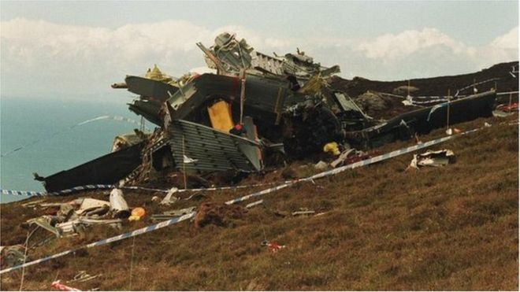
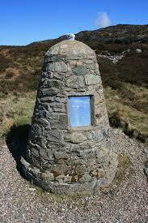

Transport
RAF Chinook
On 2 June 1994 a Boeing Chinook helicopter (large, tandem rotor helicopter) of the Royal Air Force crashed on the Mull of Kintyre, Scotland, and it killed all people who were on board (senior intelligence experts and the crew), for a total of 29 victims. During the investigations the crew was accused of negligence because they were flying too fast and too low during a foggy day, but after some time the officers found out that in reality there were some technical problems in that model of the helicopter. In fact, on 4 January 2010, the charges against the pilots have been dropped thanks to the discovery of a document elaborated 9 months prior to the incident, in which there was written that the engine software was dangerous and it could lead to failure of both engines. It has been found also another document that stated it was "imperative that the RAF should cease operations".
The pilots' families and campaigners have always believed serious flaws in the helicopter were likely to have been responsible for the crash, and it's only thanks to their insistence that the truth has been uncovered.
The victims of this disaster have been remembered again in 2004 (25 years after the incident), and all documents relating to the crash have been “kept in a safe place and not deleted" in support of the families affected.